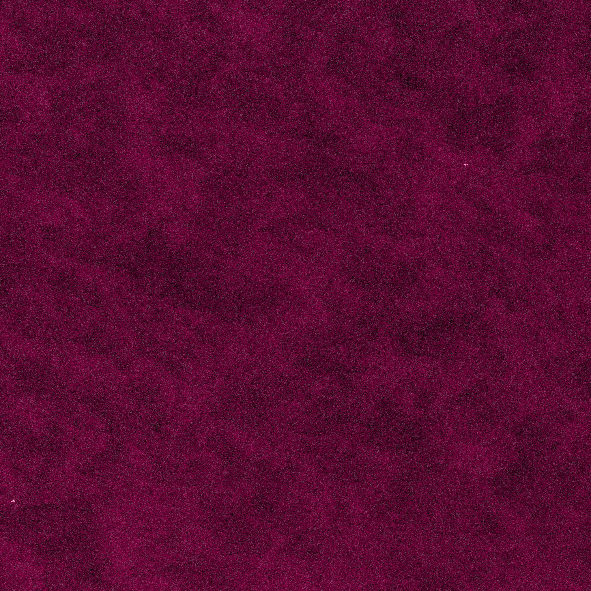
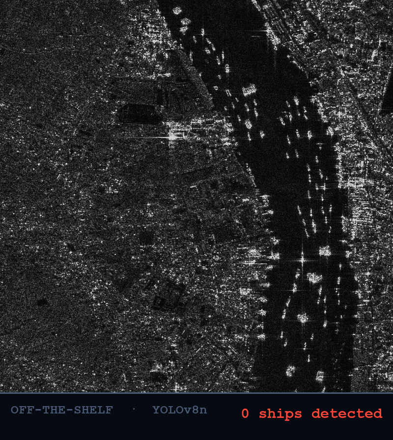
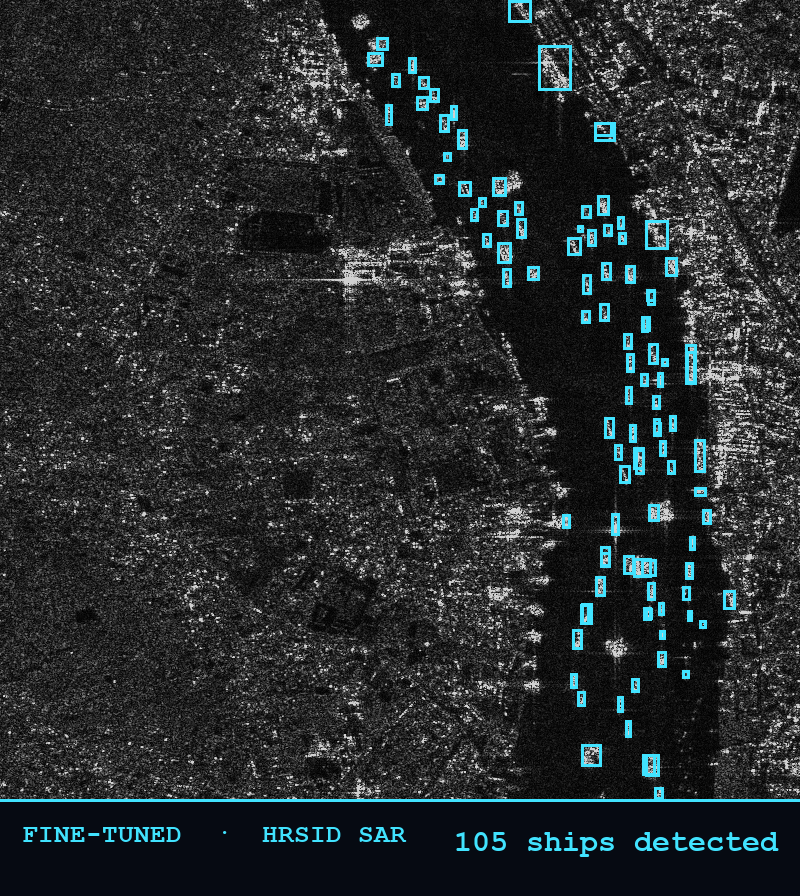

HEIMDALL.AI
Seeing what ships hide.
EDTH 2026 · ParisBaltic seabed defence
18 Nov 2024 · Baltic Sea
Two cables. Two days.
One ship.
Finland–Germany, then Lithuania–Sweden — severed on consecutive days. The same bulk carrier crossed both. The investigation ended with no charges. "An accident."
Deniability is the weapon
heimdall.ai
The stakes
99%
of the world's data — finance, the internet, military command — runs through a few hundred cables on the seabed. Unguarded. Unwatched.
heimdall.ai
The pattern
Nine cuts. Since 2022. One sea.
A €20,000 anchor severs a billion-euro artery — and takes weeks to repair. Cheap, deniable, attritional.
heimdall.ai · data/reference/incidents.csv
The real problem
We don't lack alerts.
We lack prioritization.
The ocean is too big. The sensors that actually see — satellites — are too few. Where do we point the next one, in the next hour?
heimdall.ai · the tip-and-cue problem
The catch
AIS is what a ship says.
Every vessel broadcasts who it is. But AIS is self-reported — spoof it, fake the identity, or switch it off. The cheapest signal is the one the adversary controls. A ship that wants to cut a cable simply goes dark.
SPOOFABLEFAKEABLESWITCH-OFF-ABLE
heimdall.ai
Meet Heimdall
Three senses. One watch.
Memory
Ship Scoring
Every vessel's class, history, sanctions & behaviour — scored for how out-of-character it is now.
Eyes
SAR Vision
A fine-tuned detector that finds the ships on the actual water — through cloud, through dark, whatever they broadcast.
The map
Geography
Every cable, pipeline & base as a map of strategic value — what's actually worth protecting.
heimdall.ai
Sense 01 · Memory
Knows every ship's story.
Class · track history · sanctions & shadow-fleet · behavioural coherence. Point-in-time, no look-ahead — and every score is explainable.
…but it only knows what AIS tells it. Lie to it, and it believes the lie.
heimdall.ai · scoring engine · 60 tests
Sense 02 · Eyes · Sentinel-1 SAR
Ground truth.
Can't be spoofed.
…but a radar blob has no name — and passes are scarce.
Real Sentinel-1 scene · C-Lion1 area · 17–18 Nov 2024
The model that makes the eyes work
Off-the-shelf AI is blind to radar. Ours isn't.
Base YOLOv8n · off-the-shelfmisses the ships

Fine-tuned on HRSID · SARlocks every hull

0 → 105
ships found on the same held-out SAR scene, same threshold — off-the-shelf YOLOv8n: 0; our fine-tune: the whole harbour.
~0.91 mAP50 across the HRSID test set.
~0.91 mAP50 across the HRSID test set.
scoring/train_yolov8_hrsid.py · scripts/eval/compare_before_after_finetuning.py
Sense 03 · The map
Knows what's
worth protecting.
Turns "a ship slowed down" into "a ship slowed down right over the C-Lion1 crossing." 36+ layers: cables, pipelines, naval bases, chokepoints.
…but alone it's just a map — everything near a cable looks busy.
heimdall.ai · criticality surface
The turn
Alone, each one is blind.
Ship Scoring
✗ Lied to
SAR Vision
✗ Anonymous
Geography
✗ Noise
heimdall.ai
The fusion
AIS is what a ship says. SAR is what a ship is.
The gap between them is the threat.
heimdall.ai · dark vessels & dark approaches

● LIVE
C-Lion1 / Yi Peng 3 — replayed on real AIS.
Switch to the live app
The verdict
Scored blind.
Ranked #1.
Point-in-time. No look-ahead. The real investigation took weeks and ended with no charges. Heimdall pulled the culprit out of a thousand ships — the same morning.
SAT 1SAR0.89
BOX 15.06–15.85E · 55.25–55.70N · SATELLITE TASKING · 2024-11-18 09:00Z
Yi Peng 3 — SAR dark-approach, loitering over the cable now, anomalous track record.
infra
risk
live
sar
dark
heimdall.ai · satellite tasking
Why now
The doctrine exists. The cueing layer doesn't.
NATOCritical Undersea Infrastructure Cellstood up 2024
FranceSeabed-warfare doctrinemaîtrise des fonds marins
EUCable-security mandaterecommendation 2024
Everyone tracks ships. No one tasks the sensor — and the sensor is the scarce thing. That tasking decision is the layer we own. Open data → we deploy day one.
heimdall.ai · the wedge
HEIMDALL.AI
AIS is what a ship says. SAR is what a ship is.
The gap is the threat.
The gap is the threat.
Looking for one design partner — a navy or a cable operator — to point Heimdall at live water.
Data: Danish AIS · Sentinel-1 (Copernicus) · HRSID · OpenStreetMap — see SOURCES.mdEDTH 2026 · Paris